Deliberate palette with hue shifting Finished orc where shadows slide toward cool blue-green and highlights toward warm yellow-green, so the ramps shift hue rather than only brightness (tutorial illustration, Derek Yu). Orc final stage, hue-shifted ramps (2010) · source
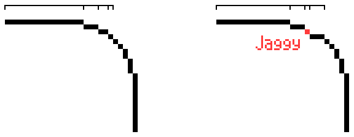
Clean, intentional linework Diagram of a pixel-line curve with the 'jaggy' step marked in red beside the clean version, showing even run lengths in intentional linework. Jaggy curve diagram (2010) · source
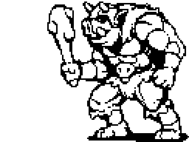
Readable value structure and silhouette The orc drawn in pure black and white, showing the silhouette and light/dark grouping read before any colour is added. Orc black-and-white value stage (2010) · source
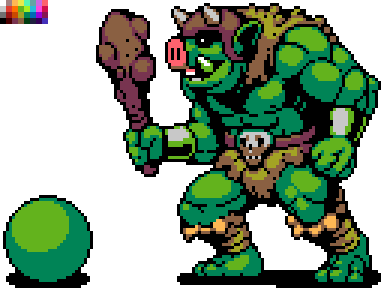
Consistent light source and form shading Orc with a colour ramp applied where highlights, midtones and shadows follow a single light direction and describe the muscle volume. Orc shaded with consistent light (2010) · source
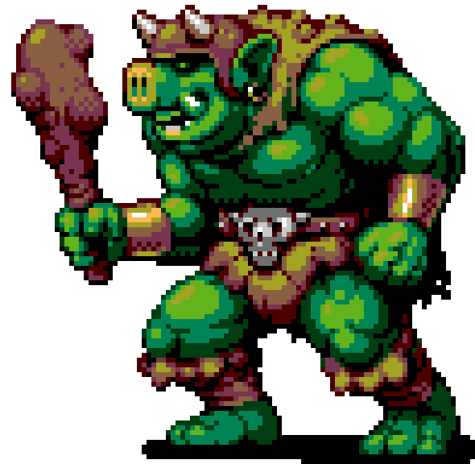
Selective outlines and colored outlines (selout) Final orc polish where the outline is tinted toward neighbouring greens and browns instead of a hard black border, adding softness and depth. Orc final with softened coloured outlines (2010) · sourceControlled dithering and texture Three bars of the same blue gradient: smooth, banded in steps, and ordered-dithered, showing how dithering trades pattern for banding. Dithering gradient comparison (2010) · source
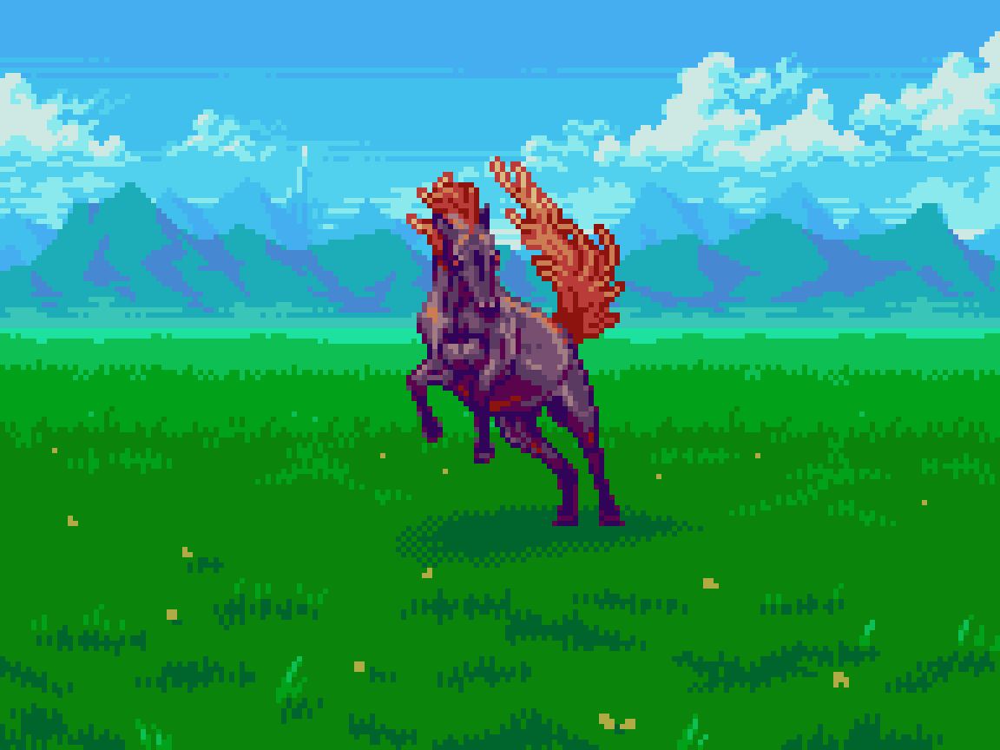
Layered depth and atmospheric perspective Modern Slynyrd landscape (fan/tutorial work) with pale hazy mountains, mid hills and saturated foreground grass separating depth planes by value, saturation and detail. Valley landscape with layered mountains (2026) · source
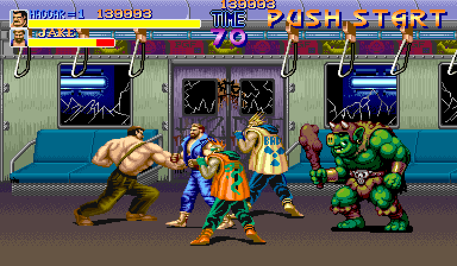
Consistent pixel grid and resolution Arcade/16-bit game screenshot in which every sprite, tile and HUD element shares one pixel size, a consistent grid across assets. Final Fight screenshot (Capcom) (1991) · source
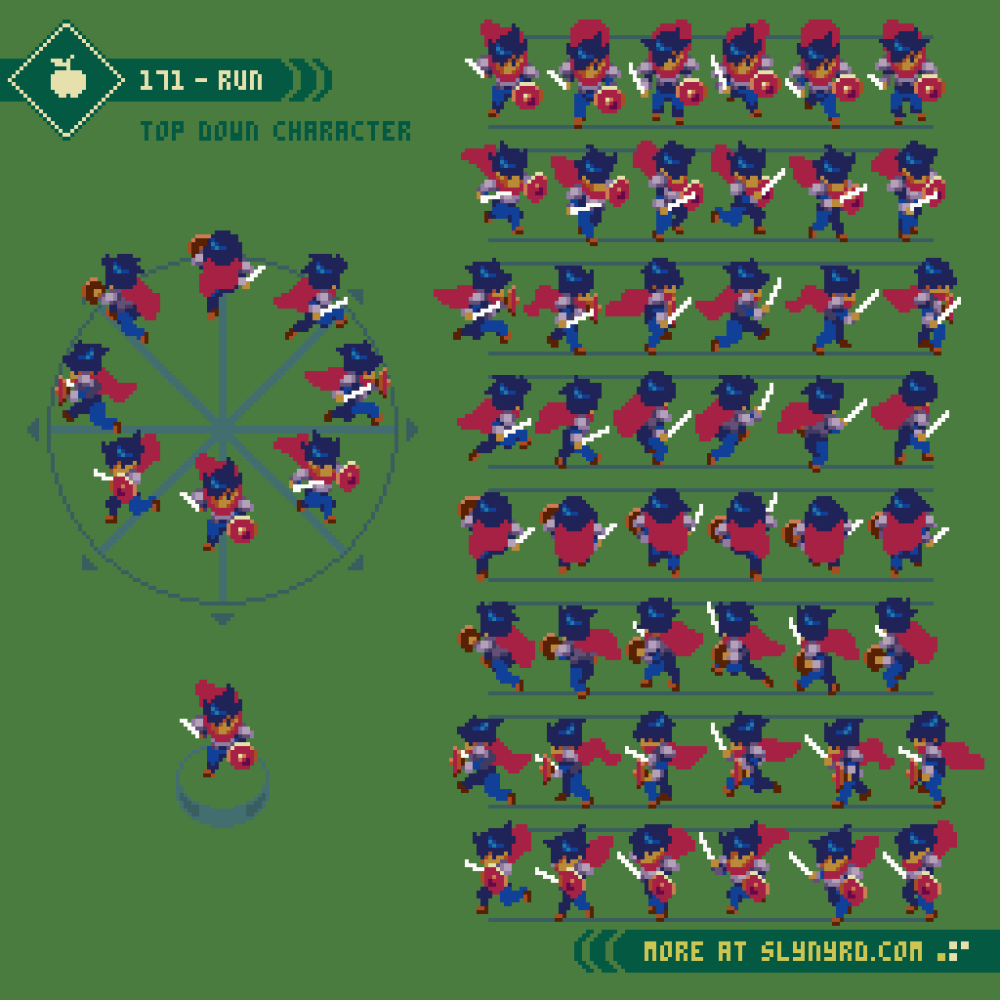
Animation polish and secondary motion Modern Slynyrd animated sheet showing a character's run in eight directions with many frames, the planned spacing behind smooth, polished animation. Top-down run cycle frame sheet (2025) · source
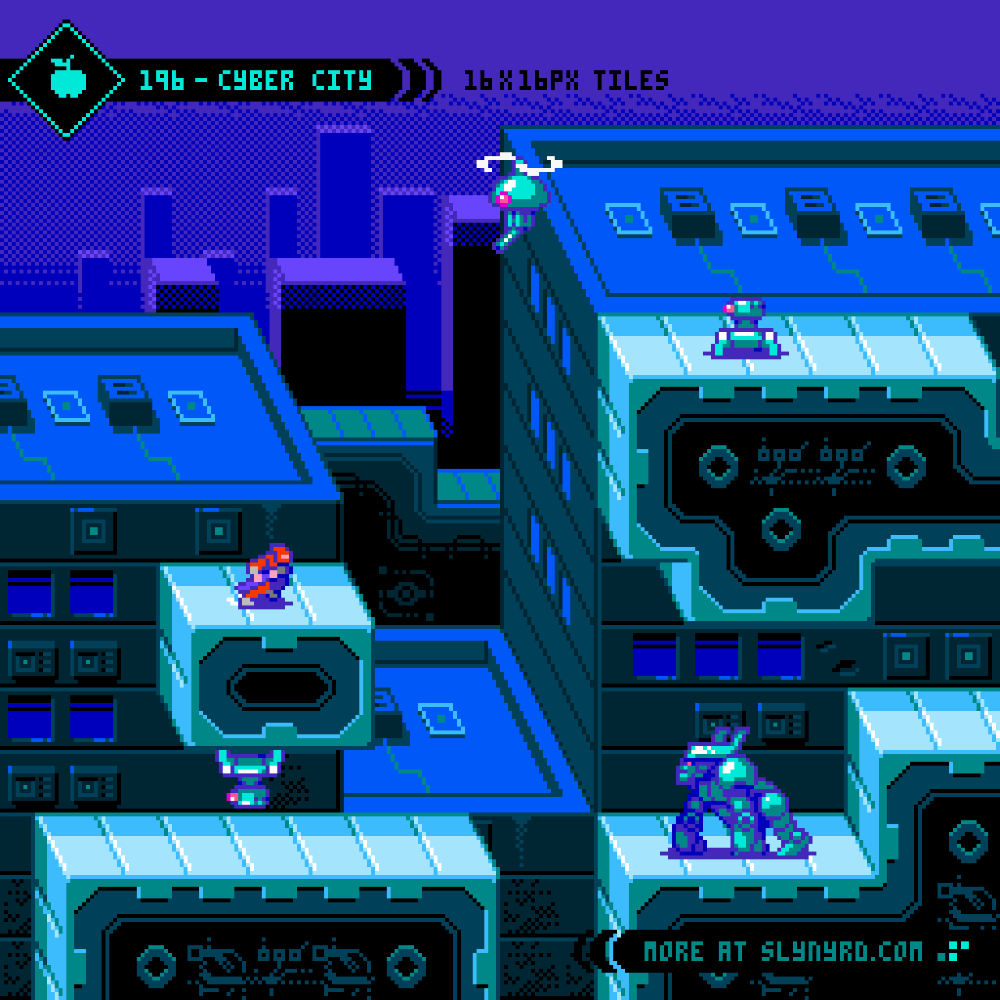
Accent lighting, glow and detail focus Modern Slynyrd cyber-city scene with emissive cyan panel lights and rim highlights popping against dark blue-purple surroundings, reserving the brightest accents for focal details. Cyber City tiles with glowing accents (2026) · source
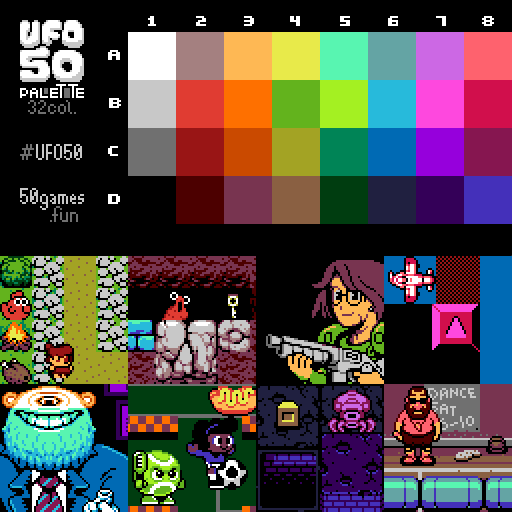
Deliberate palette with hue shifting Swatch grid of UFO 50's 32-colour palette with game sprites below, showing a small curated palette whose colours are chosen in hue-shifted families. UFO 50 32-colour palette with sample sprites (2018) · source
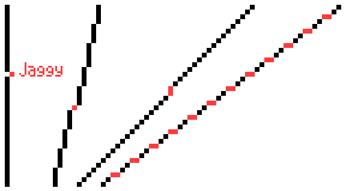
Clean, intentional linework Diagram of diagonal lines with irregular steps marked red beside clean consistent-step lines, showing doubles and uneven runs versus intentional lines. Jaggy diagonal lines diagram (2010) · source
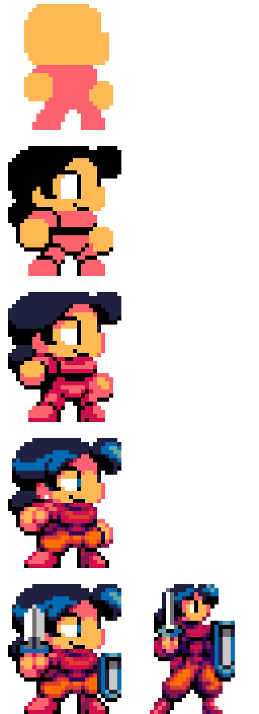
Readable value structure and silhouette Vertical stages of a small character starting as a flat orange silhouette and building to a finished sprite, showing the shape reads clearly from the first step. Pinky sprite from flat silhouette to finished (2010) · source
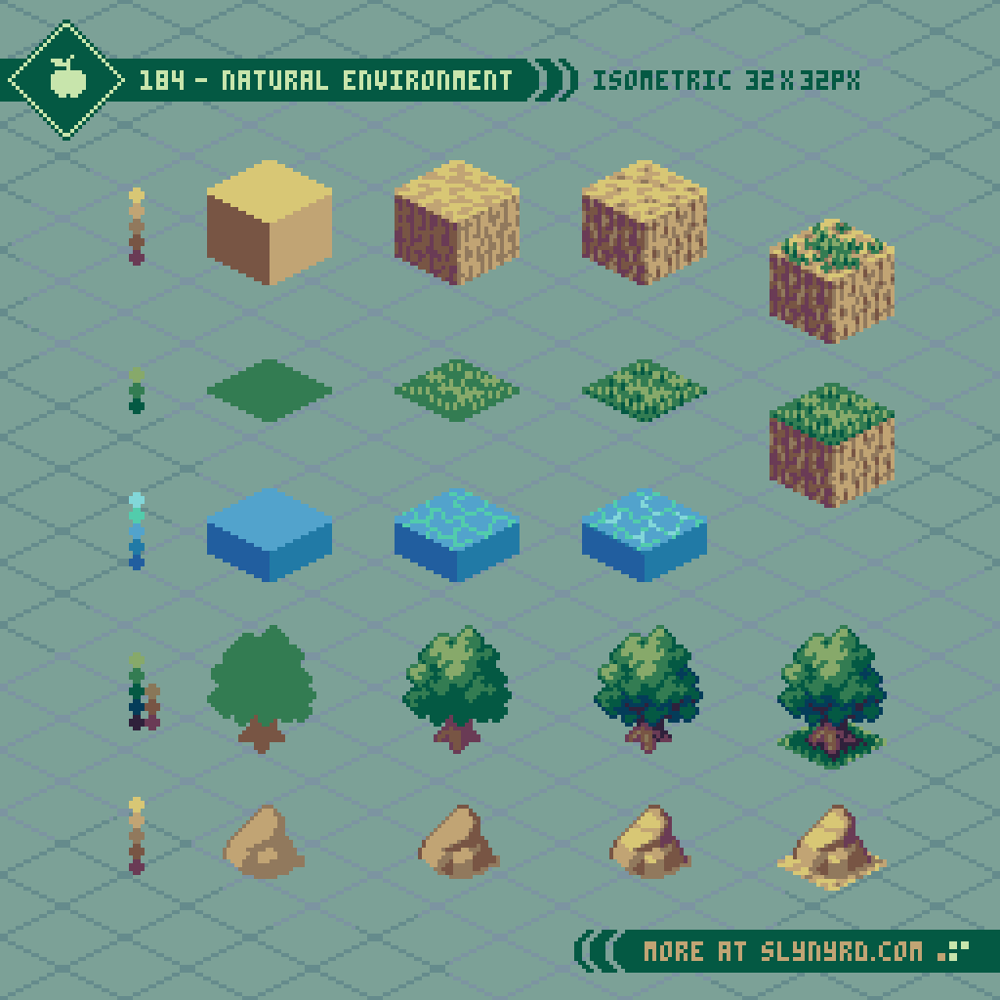
Consistent light source and form shading Modern Slynyrd isometric tile set where cubes, trees and rocks share one top-left light, with lit top faces and darker sides describing form. Isometric natural environment tiles (2024) · source
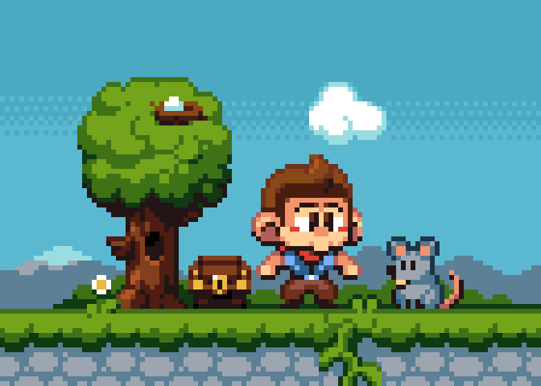
Selective outlines and colored outlines (selout) Polished scene where tree and character outlines are tinted dark green and brown rather than black, with lit edges softened, compared to the flat first pass. Pixel Boy scene after polish (2010) · source
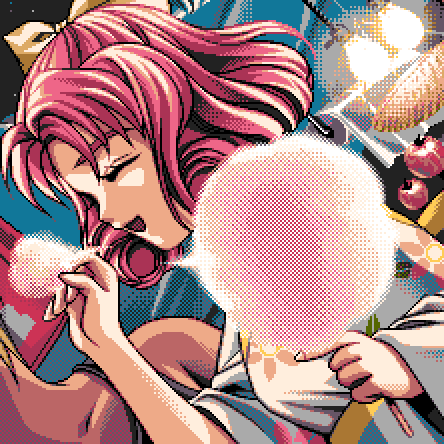
Controlled dithering and texture Anime-style pixel illustration (Japanese 1990s game art) using dither patterns in the glow and shading for gradients without extra colours. Kakyusei pixel illustration with dithering (2010) · source